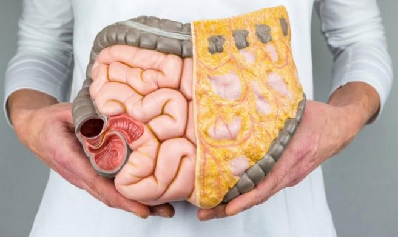

Збудник
V. cholerae, (серогрупи 01 і 0139), є короткою зігнутою рухомою
аеробною грамнегативною бацилою, що виробляє ентеротоксини - білки, що викликають
гіперсекрецію ізотонічного електролітного розчину через слизову оболонку тонкої
кишки. Ці збудники не уражають стінку кишечника, тому в стільці знаходять
мало лейкоцитів або зовсім не знаходять
Зараження токсикогенні штамами Vibrio cholerae O1 або V. cholerae O139 через вживання брудної води.